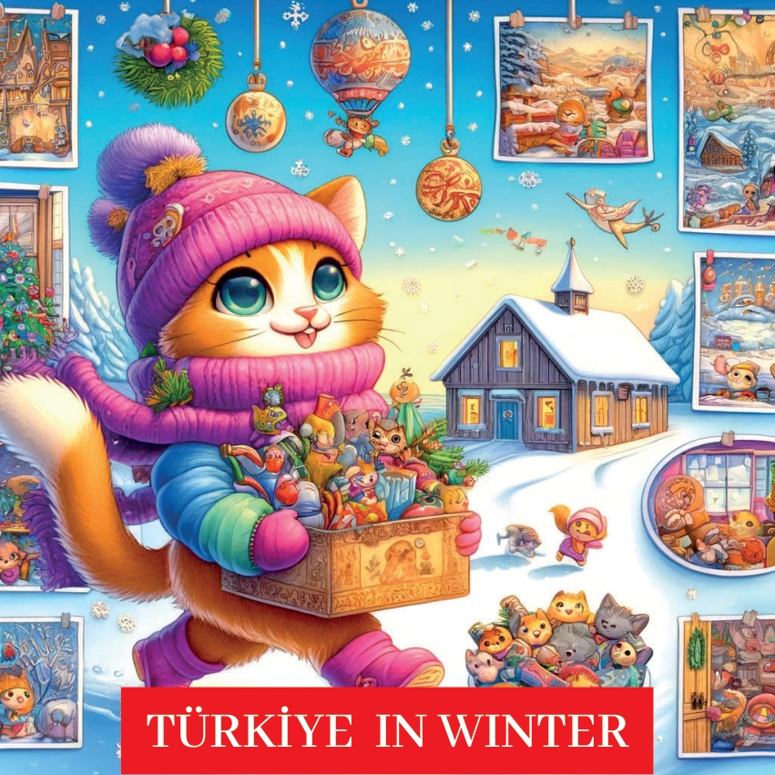
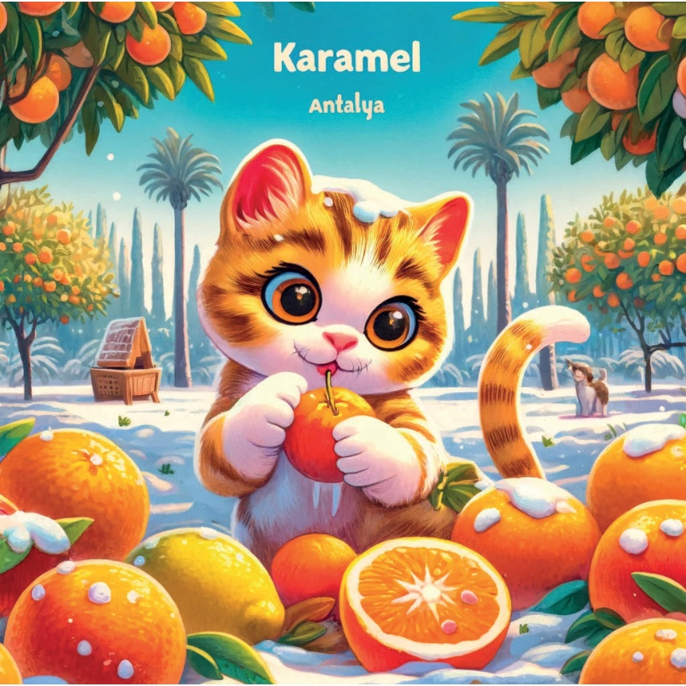
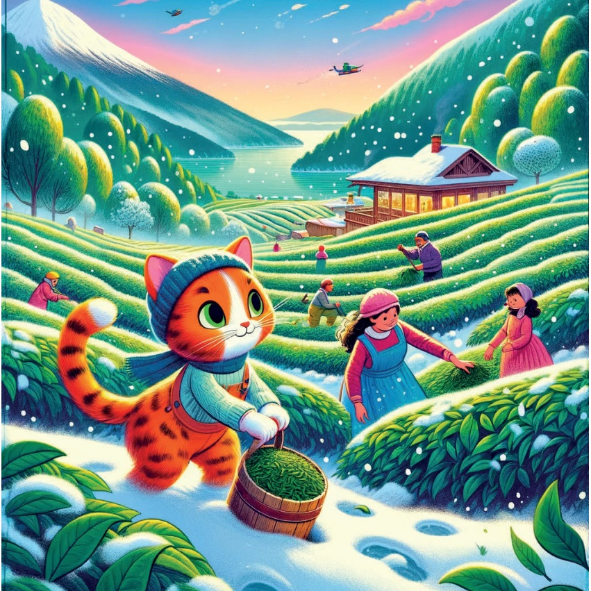
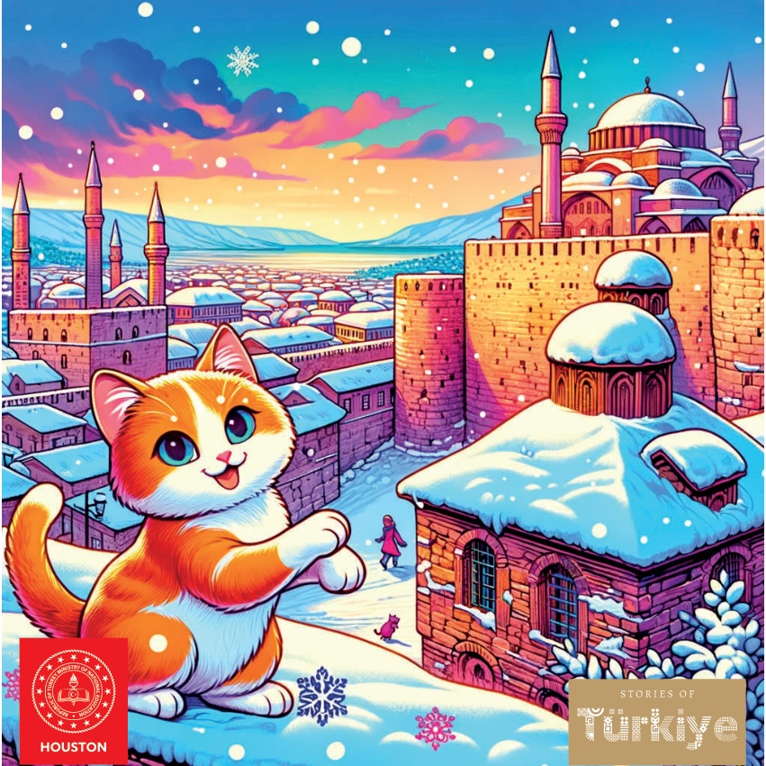

1

2

3
C’era una volta una piccola gattina di nome Karamel che amava esplorare le diverse stagioni. Un giorno, decise di viaggiare attraverso la Türkiye per vivere la bellezza e il divertimento dell'inverno..
Karamel saltellava felice mentre attraversava montagne innevate e città tranquille. Vide tanti alberi coperti di neve scintillante e sentì il suono del vento leggero che sussurrava tra i rami. I bambini giocavano a palla nella neve, costruivano pupazzi di neve con i cappelli e gli scialli colorati. Karamel osservava con grandi occhi curiosi, desiderando unirsi al loro gioco..
Un giorno, mentre esplorava un villaggio innevato, Karamel incontrò una signora anziana seduta su una panchina. La signora aveva un maglione caldo e un sorriso gentile. "Ciao, piccola Karamel," disse la signora. "Ti stai godendo l'inverno?".
"Sì, signora!" rispose Karamel. "È così bello vedere la neve!".
La signora sorrise ancora di più. "L'inverno è magico," disse. "Ma ricorda, anche quando la neve cade, il sole è sempre lì, da qualche parte.".
Karamel pensò alle parole della signora. Anche se l'inverno era freddo, sapeva che la primavera sarebbe tornata e avrebbe portato con sé il sole e i fiori. Con un balzo felice, Karamel salutò la signora e riprese la sua esplorazione dell'inverno, con il cuore pieno di gioia.
4
5
Regione Marmara - Istanbul: Karamel, che era coperta di neve, si fermò per la prima volta a Istanbul e rimase a bocca aperta davanti alla Santa Sofia innevata. L'edificio storico sembrava ancora più maestoso con un manto di neve.
6
7
Regione Egeo - İzmir: Nehirdeki Kar Kar..
Karamel, İzmir'e gitti ve burada çok nadir bir kumsalda kar yağışıyla karşılaştı. Sahildeki karı görmek büyüleyici ve unutulmazdı.
8
9
Regione Mediterranea - Antalya: Raccolta Invernale di Agrumi in Antalya.
In Antalya, Karamel ha scoperto la raccolta invernale degli agrumi. Si è divertita molto con le arance e i limoni freschi e succosi, un vero piacere con il clima mite dell'inverno.
10

11
Central Anatolia - Ankara: Battaglia di Polacchippo.
Karamel viaggiò fino ad Ankara e si unì ai bambini per una divertente battaglia di polacchippo. Le risate ed l'entusiasmo riempivano l'aria fresca dell'inverno.
12
13
Regione del Mar Nero - Trabzon: Raccolta Invernale del Tè a Trabzon, Karamel aiutò con la raccolta del tè invernale. Le foglie di tè verde contro il paesaggio innevato erano uno spettacolo bellissimo.
14

15
Diyarbakır: Le Mura di Diyarbakır Ricoperte di Neve.
Karamel si fermò a Diyarbakır. Qui esplorò le antiche mura della città, che erano coperte di neve. Il sito storico sembrava tranquillo e bellissimo in inverno.
16
17
Avventura sulla Neve a Erzurum.
A Erzurum, in Anatolia Orientale, Karamel ha provato la gioia dello sci! Scivolava giù dalle piste innevate, divertendosi con gli sport invernali e ammirando le bellissime montagne ricoperte di neve.
18
19
Karamel aveva il cuore pieno di gioia invernale e di nuove esperienze. Capì che ogni regione della Türkiye aveva un fascino invernale speciale. Tornò a casa sognando la sua prossima avventura stagionale.
20
21

22